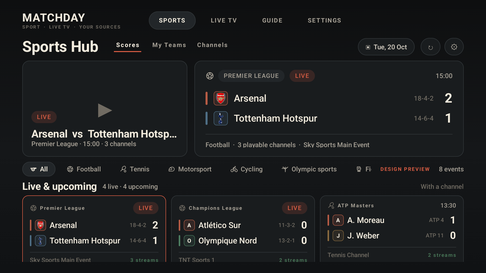
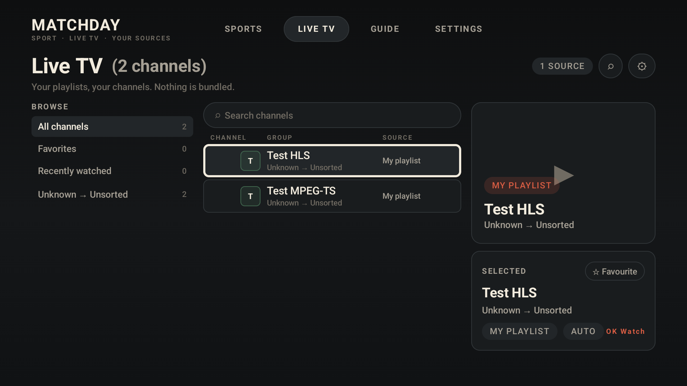

Team crests
Provider artwork loaded at runtime · monogram fallback when absent

Sports Hub: Arsenal and Tottenham Hotspur crests in the scoreboard and event card.
Live TV: three-pane browser with category rail, search, channel table and preview.